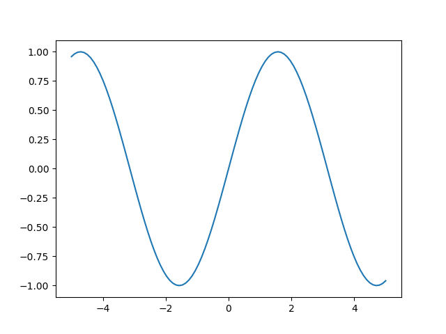

IN2T - Informatique Calculs numériques
Quentin Lurkin
Calculatrice
Un ordinateur n'est au final qu'une grosse calculatrice avec plusieurs
avantages :
Meilleur clavier
Meilleur écran
Plus de puissance
Il est extrêmement commun pour un ingénieur d'utiliser un
ordinateur pour effectuer des calculs .
L'utilisation de Python dans ce domaine est très
répandue dans le monde professionnel.
Trigonométrie
import math
print(math.cos(math.pi))
print(math.sin(math.pi/2))
print(math.tan(math.pi/4))
print(math.acos(0)) # arc cosinus
print(math.asin(1)) # arc sinus
print(math.atan(1)) # arc tangente
Le module math contient bien d'autres fonctions
mathématiques
Nombre complexes
import cmath
# racine carrée de nombres négatifs
print(cmath.sqrt(-1))
# définir un nombre complex
x = 1+2j
x = complex(1, 2)
print(x)
# parties réelles et imaginaires
print(x.real)
print(x.imag)
# modules et arguments
print(cmath.phase(x)) # argument
print(abs(x)) # module
print(cmath.polar(x)) # module et argument
# définition d'1 nb complex à partir du module et argument
print(cmath.rect(1, cmath.pi))
# opérations
print(x+x)
print(x*x)
print(cmath.exp(x)) # exponentielle
Calculs vectoriels
Il serait possible de représenter des vecteurs avec des listes
Pas pratique, essayer une somme !
Le module numpy facilite l'utilisation de vecteurs
Installation
$> python -m pip install numpy
Numpy
Utilisation d'un alias
import numpy as np
Création d'un vecteur
v = np.array([1, 1, 3])
Opérations
print(2*v) # Multiplication par un scalaire
print(v+v) # Somme
print(v.dot(v)) # Produit scalaire
print(v @ v) # Produit scalaire
v2 = np.array([2, -1, 2]
print(np.cross(v, v2))) # Produit vectoriel
print(np.linalg.norm(v)) # Norme
Vecteurs
Plusieurs manières de créer des vecteurs de valeurs
Depuis une structure Python, ou par des fonctions de Numpy
np.array([1, 2, 3])
np.zeros(5)
np.ones(10)
np.random.random(10)
np.random.randn(10)
np.linspace(0, 10, 5)
np.arange(0, 10, 0.2)
Opérations avec scalaire
a = np.array([1, 2, 3, 4])
a + 1 # [2, 3, 4, 5]
2 * a # [2, 4, 6, 8]
a ** 2 # [1, 4, 9, 16]
1 / a # [1.0, 0.5, 0.3333, 0.25]
a < 3 # [True, True, False, False]
Opérations entre vecteurs
vecteurs de même taille
élément par élément
a = np.array([1, 2, 3, 4])
b = np.array([5, 6, 7, 8])
a + b # [6, 8, 10, 12]
a * b # [5, 12, 21, 32]
Fonctions vectorisées
Fonctions qui s'applique sur tous les éléments d'un vecteur
x = np.array([1, 2, 3])
# Fonction standard ne marche pas
y = math.sin(x) # Error
# Fonction vectorisée existe dans numpy
y = np.sin(x)
Créer une fonction vectorisée
La plupart des opérations de base sont déjà supportées par numpy.
Mais il est facile de créer des fonctions vectorisées :
@np.vectorize
def fun(a, b):
if a > b:
return 1
return -1
x = np.array([1, 2, 3])
y = np.array([3, 2, 1])
print(fun(x, y))
Créer un graphique
Importer matplotlib
from matplotlib import pyplot as plt
Importer numpy
import numpy as np
Créer les abscisses des échantillons
# 100 valeurs entre -2 et 2
x = np.linspace(-5, 5, 100)
Calculer les ordonnées
# np.sin est la version vectorisée de sin
y = np.sin(x)
Dessiner le graphique
plt.plot(x, y)
plt.show()

Style
Toutes les parties du graphique sont paramètrables
from matplotlib import pyplot as plt
import numpy as np
x = np.linspace(-5, 5, 100)
y = np.sin(x)
plt.title("Sinus")
plt.xlabel("x")
plt.ylabel("sin(x)")
plt.grid()
plt.xticks([-3*np.pi/2, -np.pi, -np.pi/2, 0, np.pi/2, np.pi, 3*np.pi/2],
labels=["-3pi/2", "-pi", "-pi/2", "0", "pi/2", "pi", "3pi/2"])
plt.plot(x, y)
plt.show()
Plusieurs courbes
from matplotlib import pyplot as plt
import numpy as np
x = np.linspace(-5, 5, 100)
ysin = np.sin(x)
ycos = np.cos(x)
plt.title("Trigono")
plt.xlabel("x")
plt.ylabel("y")
plt.grid()
plt.xticks([-3*np.pi/2, -np.pi, -np.pi/2, 0, np.pi/2, np.pi, 3*np.pi/2],
labels=["-3pi/2", "-pi", "-pi/2", "0", "pi/2", "pi", "3pi/2"])
plt.plot(x, ysin, label="sin(x)")
plt.plot(x, ycos, label="cos(x)")
plt.legend()
plt.show()
Deux API
Tous les exemples précédents on été donné dans l'API implicite de matplotlib
Qui ressemble plus à Matlab
Voici un exemple dans l'API explicite:
from matplotlib import pyplot as plt
import numpy as np
x = np.linspace(-5, 5, 100)
ysin = np.sin(x)
ycos = np.cos(x)
fig, ax = plt.subplots()
ax.set_title("Trigono")
ax.set_xlabel("x")
ax.set_ylabel("y")
ax.grid()
ax.set_xticks([-3*np.pi/2, -np.pi, -np.pi/2, 0, np.pi/2, np.pi, 3*np.pi/2],
labels=["-3pi/2", "-pi", "-pi/2", "0", "pi/2", "pi", "3pi/2"])
ax.plot(x, ysin, label="sin(x)")
ax.plot(x, ycos, label="cos(x)")
ax.legend()
plt.show()
Deux API
API implicite
plt.subplot(1, 2, 1)
plt.plot([1, 2, 3], [0, 0.5, 0.2])
plt.subplot(1, 2, 2)
plt.plot([3, 2, 1], [0, 0.5, 0.2])
plt.suptitle('Implicit Interface')
for i in range(1, 3):
plt.subplot(1, 2, i)
plt.xlabel('Boo')
plt.show()
API explicite
fig, axs = plt.subplots(1, 2)
axs[0].plot([1, 2, 3], [0, 0.5, 0.2])
axs[1].plot([3, 2, 1], [0, 0.5, 0.2])
fig.suptitle('Explicit Interface')
for i in range(2):
axs[i].set_xlabel('Boo')
plt.show()
Calcul Matriciel
Numpy permet aussi de travailler avec des tableaux
np.array([[1, 2], [3, 4]])
np.ones((2, 3))
np.zeros((3, 3))
Même opérations que le vecteurs
Opérations avec scalaires
Opérations avec tableaux de même taille et produit matriciel
A = np.array([[1 , 2] , [3 , 4]])
B = np.array([[5 , 6] , [7 , 8]])
A * B # produit élément par élément
A @ b # produit matriciel
Fonctions sur les tableaux
Attributs
x = np.array([[1, 2],
[3, 4],
[5, 6]])
x.ndim # Dimension => 2
x.shape # Forme => (3, 2)
x.size # Nombre total d’éléments => 6
x.dtype # Type de données stockées => dtype('int32')
Indexation
x = np.array([[1, 2],
[3, 4],
[5, 6]])
x[0, 1] # x[0][1] => 2
# Slice
x[:2, 1] # [2, 4]
x[[0, 2], :] # [[1, 2], [5, 6]]
# Indexation booléenne
x[[[True , False],
[False, True ],
[True , True ]]] # [1, 4, 5, 6]
x[x < 4] # [1, 2, 3]
# Edition conditionnelle
x[x < 4] = 0 # [[0, 0],
# [0, 4],
# [5, 6]]
Méthodes
x = np.array([[1, 2],
[3, 4],
[5, 6]])
x.reshape((2, 3)) # [[1, 2, 3],
# [4, 5, 6]]
x.flatten() # [1, 2, 3, 4, 5, 6]
x.diagonal() # [1, 4]
x.trace() # 5
x.sum(axis=1) # [3, 7, 11]
y = x.transpose() # [[1, 3, 5],
# [2, 4, 6]]
Algèbre Linéaire
import numpy as np
from scipy import linalg
A = np.array([[1 , 2] , [3 , 4]])
b = np.array([[5] , [6]])
A.T # transpose
linalg.det(A) # déterminant
linalg.inv(A) # inverse
A @ b # produit matriciel
Algèbre Linéaire
Résolution de système d'équations linéaires $$ \begin{alignat}{2} 1&x+&2&y=5 \\ 3&x+&4&y=6 \end{alignat} $$
$$ \begin{pmatrix}
1 & 2 \\
3 & 4
\end{pmatrix} \begin{pmatrix}
x \\
y
\end{pmatrix} = \begin{pmatrix}
5 \\
6
\end{pmatrix}$$
$$ \begin{pmatrix}
x \\
y
\end{pmatrix} = \begin{pmatrix}
1 & 2 \\
3 & 4
\end{pmatrix}^{-1} \begin{pmatrix}
5 \\
6
\end{pmatrix}$$
import numpy as np
from scipy import linalg
A = np.array([[1 , 2] , [3 , 4]])
b = np.array([[5] , [6]])
linalg.inv(A).dot(b)
linalg.solve(A, b)
Recherche de racine
from scipy import optimize
def fun(x):
return np.cos(x)+np.cos(3*x+1)/2+np.cos(5*x-1)/3
root = optimize.newton(fun, -1)
print(root) # -1.2646564339411952
x = np.linspace(-5, 5, 1000)
plt.plot(x, fun(x))
plt.plot(root, 0, "o")
plt.grid()
plt.show()
Intégrale définie
Intégration numérique avec integrate.quad
from scipy import integrate
def fun(x):
return np.sqrt(1 - x**2)
result = integrate.quad(fun, -1, 1)
print(result) # (pi/2, erreur)
x = np.linspace(-1, 1, 100)
y = fun(x)
plt.fill_between(x, y, alpha=0.5)
plt.plot(x, y)
plt.grid()
plt.xlim(-1.5, 1.5)
plt.annotate(str(result[0]), xy=(0, 0.4), ha="center")
plt.show()
Equations différentielles
Equation différentielle avec conditions initiales $$ \frac{dy(t)}{dt} = t - y(t) $$
Avec scipy
from matplotlib import pyplot as plt
from scipy.integrate import solve_ivp
import numpy as np
def fun(t, y):
return t-y
sol = solve_ivp(
fun=fun,
t_span=[0, 15],
y0=[2],
rtol = 1e-5
)
t, y = np.meshgrid(np.linspace(0, 15, 10), np.linspace(0, 13, 10))
u = 1
v = fun(t, y)
print(v)
plt.quiver(t,y,u,v)
plt.plot(sol.t, sol.y[0], '--s')
plt.show()
Résultat: